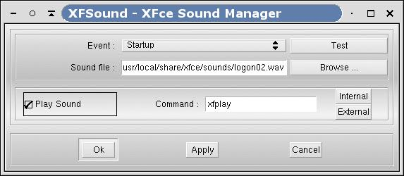

Figure 6-10. XFSound
XFSound is in charge of emitting a sound whenever an event occurs from the window manager. It is started from the setup dialog.
When XFSound is started as a module (i.e. from XFce or XFwm using the keyword "Module") it just enters a loop that keeps on listening to the events coming from the Window Manager (XFwm).
The user can interact with XFSound using the graphical interface by starting XFSound as a regular X application (i.e. not as a module).